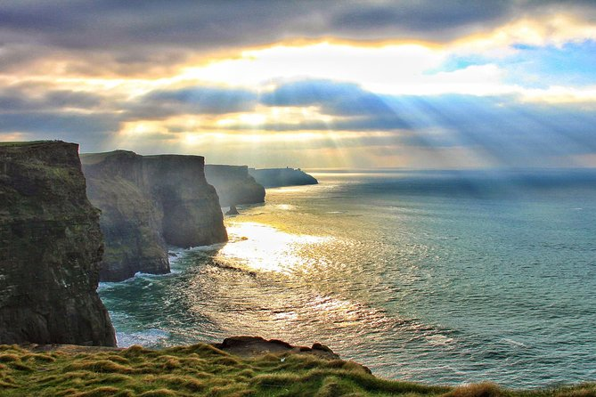
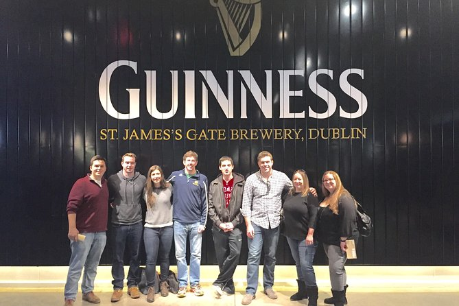
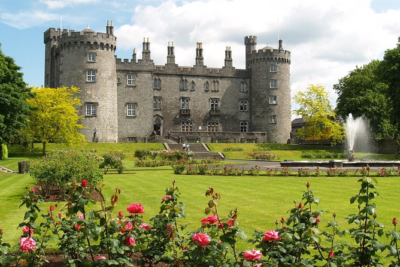
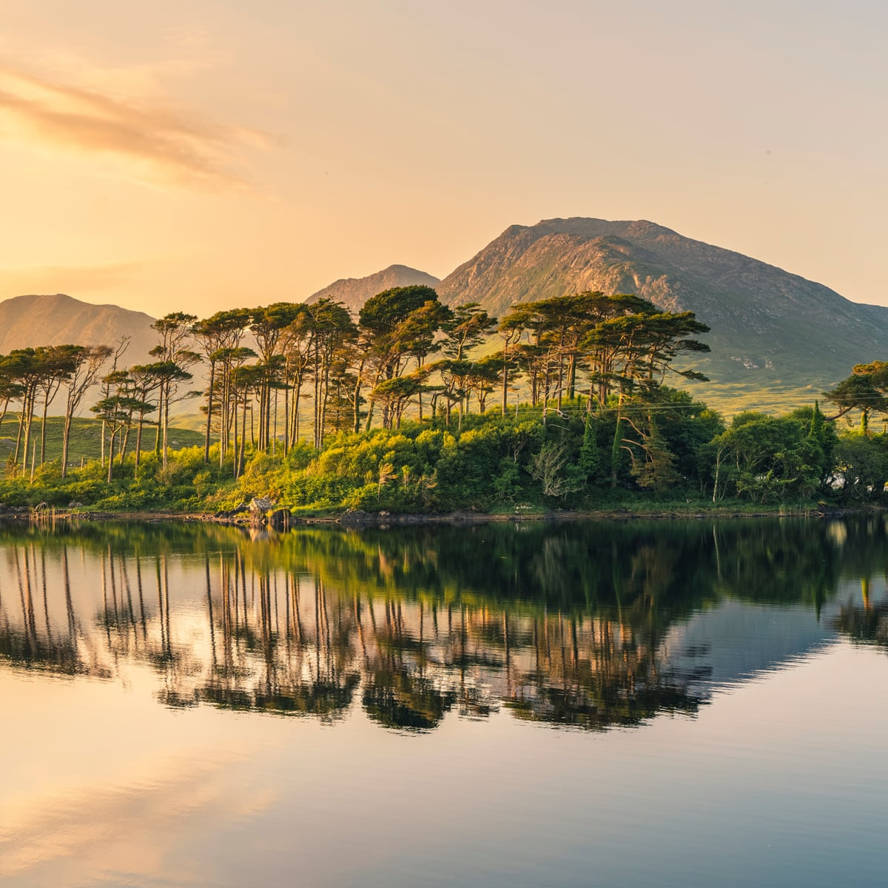

Тур 1: Скелі Мохер-Голвей-Кільце Керрі
13-годинна подорож Ірландією, що включає у себе огляд міста Голвей, Скель Мохер та всесвітньо відомого маршруту Wild Atlantic Way. Перейти до туру

Тур 2: Історія ірландського віскі
4-годинна мандрівка столицею, Дубліном, у ході якої ви дізнаєтеся багато нового про історію ірландського віскі, побачите процес його приготування, ну і ,звичайно, отримаєте нагоду спробувати напій. Перейти до туру

Тур 3: Кілкенні-Глендалох-Wicklow Mountains
10-годинна подорож, що продемонструє богемне містечко Кілкенні, а також допоможе туристам оцінити величну красу ірландської природи на контрасті із міськими пейзажами старого Кілкенні. Перейти до туру

Тур 4: Коннемара-Kylemore Abbey
8-годинна поїздка до живописного національного парку Коннемара, у якому є достаньо локацій, щоб насолодитися неймовірними пейзажами диких куточків Смарагдового острову і зробити купу інстаграмних фото Поряд із Коннемарою розташовується замковий комплекс Kylemore Abbey, що є всесвітньо відомим об'єктом. Перейти до туру
